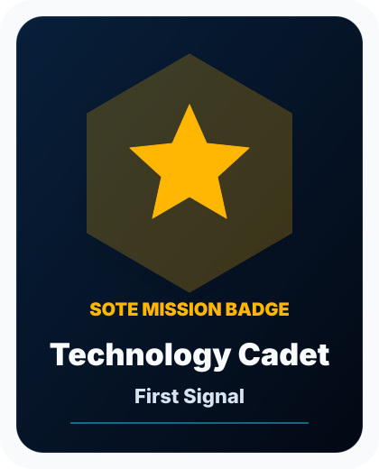
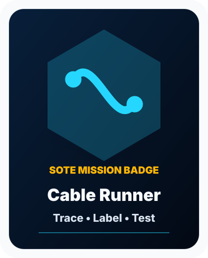
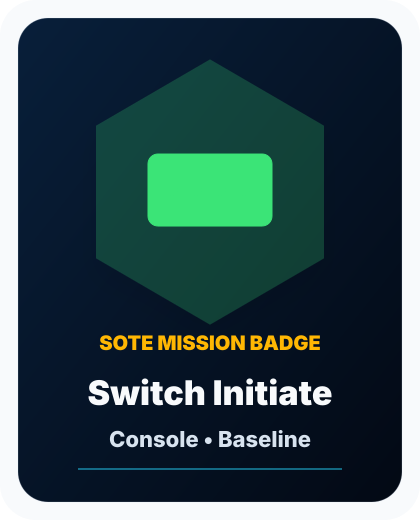
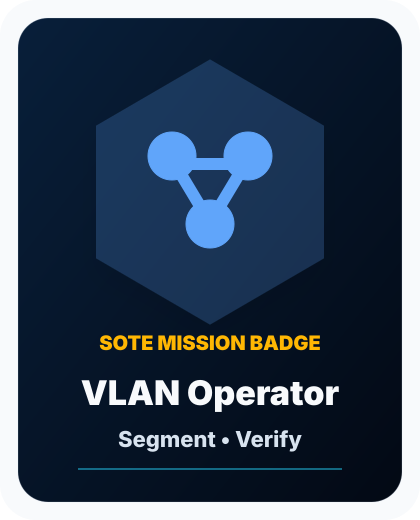

First Signal Mission
- Start in CEIT 325.
- Visit Mission Control, Rocket’s Forge, and the Cyber Defense Command.
- Name one system, one support task, and one defense task.
- Claim the Technology Cadet badge path.
Visitor One-Sheet
Training the next generation of technology professionals through student-operated enterprise infrastructure.
Ace represents support and student success.
Professor Rocket represents infrastructure and engineering.
Sir Kingston represents cyber defense.
SOTEE represents the future knowledge assistant.




Start as a Technology Cadet and keep moving through the Student Technology Corps.
Use the browser print button or download the PDF.